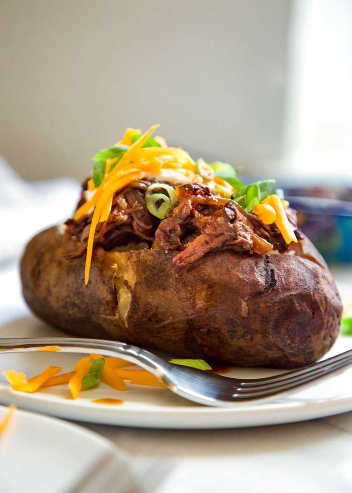

Loaded Baked Potato

This recipe is an easy slow-cooker one-pot recipe that only requires a wet rub for the chuck roast and placing
parchment-wrapped russet potatoes on top. However, for a crispier potato skin and fluffier inside, I like to cook my
potatoes separate in the oven.
Ingredients
- 1/3 cup brown sugar
- 4 oz tomato paste
- 2 tbsp Worcestershire Sauce
- 1 tbsp chili seasoning
- 1 tsp salt
- 1 tsp fresh ground black pepper
- 1 1/2 lb boneless chuck roast
- 2 cups red onion sliced vertically
- 6 4 oz russet potatoes
- 2 tsp olive oil or bacon fat
- 4 oz sharp cheddar cheese shredded
- 6 tbsp sour cream
- 3 green onions sliced thin on the bias
Steps
- Trim the ends from the red onion and slice vertically. Place in a slow cooker that has been coated with cooking
spray.
- In a small bowl combine the brown sugar, tomato paste, Worcestershire Sauce, chili powder, salt and pepper. Stir
to mix and rub evenly on both sides of the boneless chuck roast. Place roast on top of red onions.
- Rub potatoes with oil or bacon fat and season all over with salt and pepper. Wrap each potato in parchment paper
and place on top of roast. Cover with lid and cook on Low for 8 hours.
- Shred the cheddar cheese and slice the green onion. Set aside.
- Remove lid and potatoes. Shred BBQ beef with fork and stir with cooking sauce and onions.
- Unwrap each potato and slice opening on top. Using a fork, fluff potato inside. Top each potato with 1/2 cup BBQ
beef mixture, tablespoon of sour cream, shredded cheese and green onions. Serve immediately.
Home
Source
recipe